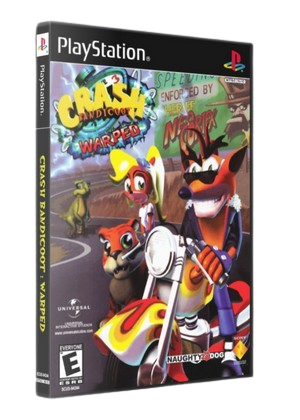
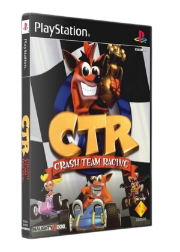

Games
Em 1996, a Naughty Dog lançou Crash Bandicoot para PlayStation, inaugurando a série de jogos de plataforma.
Crash Bandicoot 2: Cortex Strikes Back, de 1997, é um jogo de plataforma da Naughty Dog e Sony para PlayStation.

Crash Bandicoot: Warped, conhecido como Crash Bandicoot 3: Warped na Europa e Crash Bandicoot 3: Flying! Globe-Trotting no Japão, foi lançado em 1998.

Crash Team Racing, conhecido como Crash Bandicoot Racing no Japão, é o quarto jogo da série e último da Naughty Dog. Foi lançado em setembro de 1999 para PlayStation.
Crash Bash é o quinto jogo da série Crash, assim como o último da série para o PlayStation. Foi desenvolvido pela Eurocom em 9 de novembro de 2000.